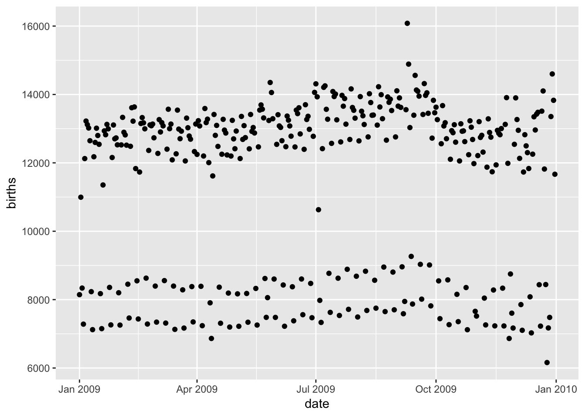
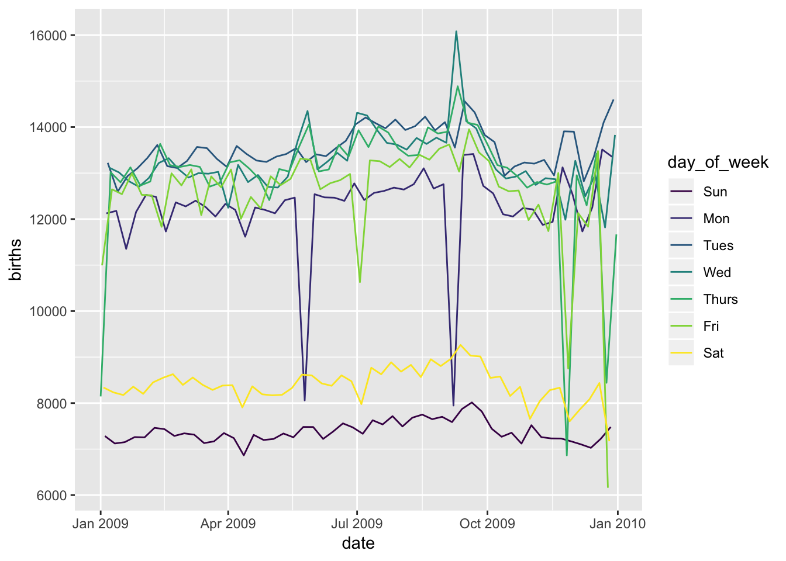

Up to this point, we’ve worked with four different types of plots. Can you name them?
These have all have been stationary plots though. You couldn’t hover over values to gain greater insights with those. Using only one function, we can extend the vast majority of ggplot plots into interactive graphics. In our experience, these work best with scatterplots and line graphs. Let’s see how!
Babies born per day
The fivethirtyeight R package contains two data sets providing information from the US Social Security Administration on the number of baby births in the US over the last few decades. Let’s focus on the US_births_2000_2014 data set and in particular the year 2009.
library(fivethirtyeight)
library(dplyr)
US_births_2009 <- US_births_2000_2014 %>%
filter(year == 2009)
Note at this point you may want to look further at the data using View(US_births_2009).
Let’s investigate how many babies were born on each day in 2009:
library(ggplot2)
ggplot(data = US_births_2009, mapping = aes(x = date, y = births)) +
geom_point()

See anything strange here? Let’s try to get a better sense of what the specific days are by turning this into an interactive plot. By default, ggplotly() will create an interactive version of the last ggplot created.
library(plotly)
ggplotly()
Why are some dots far below the others?
ggplot(data = US_births_2009,
mapping = aes(x = date, y = births, color = day_of_week)) +
geom_line()

Your turn
Use data visualization to determine which day (date and day of the week) had the highest and lowest number of births in 2009.
# Enter your plot code here
# ONE SOLUTION
ggplotly()
# Christmas Day (2009-12-25) had the lowest and 2009-09-09 had the highest.
ggplotly() doesn’t work in all circumstances but is pretty slick when it does work! Note that you can also assign the plots to have a name and then use that as an argument to the ggplotly() function:
all_days_scatter <- ggplot(data = US_births_2009, mapping = aes(x = date, y = births)) +
geom_point()
by_day_line <- ggplot(data = US_births_2009, mapping = aes(x = date, y = births)) +
geom_line(mapping = aes(color = day_of_week))
ggplotly(all_days_scatter)
ggplotly(by_day_line)
Conclusion
One of the great things about learning about the Grammar of Graphics is that its mapping of aesthetics onto geometries extends to a variety of other tools as well, including the plotly() syntax and the Tableau visualization software. (That’s one of the places Leland Wilkinson works after all.)
More resources
Ted and Jessica Minnier created a free DataCamp course covering many of the topics covered here if you’d like to go back and practice on your own. Chester and Albert Kim wrote a free introductory textbook to help beginners get going with R. We’re biased but we also highly recommend Dave Robinson’s Introduction to the Tidyverse course on DataCamp that Chester helped to author in his role at DataCamp.
Post-session survey
We appreciate and yearn for your constructive and descriptive feedback so that we can improve as educators. To further support this, please feel out this brief survey.
LS0tCnRpdGxlOiAiUGFydCAzIC0gQ29udmVydGluZyB0byBpbnRlcmFjdGl2ZSBncmFwaGljcyBTT0xVVElPTlMiCmF1dGhvcjogIkNoZXN0ZXIgSXNtYXkiCm91dHB1dDogCiAgaHRtbF9kb2N1bWVudDoKICAgIGNvZGVfZG93bmxvYWQ6IHRydWUKICAgIGNvZGVfZm9sZGluZzogc2hvdwotLS0KClVwIHRvIHRoaXMgcG9pbnQsIHdlJ3ZlIHdvcmtlZCB3aXRoIGZvdXIgZGlmZmVyZW50IHR5cGVzIG9mIHBsb3RzLiBDYW4geW91IG5hbWUgdGhlbT8KClRoZXNlIGhhdmUgYWxsIGhhdmUgYmVlbiBzdGF0aW9uYXJ5IHBsb3RzIHRob3VnaC4gWW91IGNvdWxkbid0IGhvdmVyIG92ZXIgdmFsdWVzIHRvIGdhaW4gZ3JlYXRlciBpbnNpZ2h0cyB3aXRoIHRob3NlLiBVc2luZyBvbmx5IG9uZSBmdW5jdGlvbiwgd2UgY2FuIGV4dGVuZCB0aGUgdmFzdCBtYWpvcml0eSBvZiBgZ2dwbG90YCBwbG90cyBpbnRvIGludGVyYWN0aXZlIGdyYXBoaWNzLiBJbiBvdXIgZXhwZXJpZW5jZSwgdGhlc2Ugd29yayBiZXN0IHdpdGggc2NhdHRlcnBsb3RzIGFuZCBsaW5lIGdyYXBocy4gTGV0J3Mgc2VlIGhvdyEKCgojIyMgQmFiaWVzIGJvcm4gcGVyIGRheQoKVGhlIFtgZml2ZXRoaXJ0eWVpZ2h0YF0oaHR0cDovL2ZpdmV0aGlydHllaWdodC1yLm5ldGxpZnkuY29tLykgUiBwYWNrYWdlIGNvbnRhaW5zIHR3byBkYXRhIHNldHMgcHJvdmlkaW5nIGluZm9ybWF0aW9uIGZyb20gdGhlIFVTIFNvY2lhbCBTZWN1cml0eSBBZG1pbmlzdHJhdGlvbiBvbiB0aGUgbnVtYmVyIG9mIGJhYnkgYmlydGhzIGluIHRoZSBVUyBvdmVyIHRoZSBsYXN0IGZldyBkZWNhZGVzLiBMZXQncyBmb2N1cyBvbiB0aGUgW2BVU19iaXJ0aHNfMjAwMF8yMDE0YF0oaHR0cDovL2ZpdmV0aGlydHllaWdodC1yLm5ldGxpZnkuY29tL3JlZmVyZW5jZS91c19iaXJ0aHNfMjAwMF8yMDE0KSBkYXRhIHNldCBhbmQgaW4gcGFydGljdWxhciB0aGUgeWVhciAyMDA5LgoKYGBge3IgbWVzc2FnZT1GQUxTRX0KbGlicmFyeShmaXZldGhpcnR5ZWlnaHQpCmxpYnJhcnkoZHBseXIpClVTX2JpcnRoc18yMDA5IDwtIFVTX2JpcnRoc18yMDAwXzIwMTQgJT4lIAogIGZpbHRlcih5ZWFyID09IDIwMDkpCmBgYAoKTm90ZSBhdCB0aGlzIHBvaW50IHlvdSBtYXkgd2FudCB0byBsb29rIGZ1cnRoZXIgYXQgdGhlIGRhdGEgdXNpbmcgYFZpZXcoVVNfYmlydGhzXzIwMDkpYC4KCkxldCdzIGludmVzdGlnYXRlIGhvdyBtYW55IGJhYmllcyB3ZXJlIGJvcm4gb24gZWFjaCBkYXkgaW4gMjAwOToKCmBgYHtyIG1lc3NhZ2U9RkFMU0V9CmxpYnJhcnkoZ2dwbG90MikKZ2dwbG90KGRhdGEgPSBVU19iaXJ0aHNfMjAwOSwgbWFwcGluZyA9IGFlcyh4ID0gZGF0ZSwgeSA9IGJpcnRocykpICsKICBnZW9tX3BvaW50KCkKYGBgCgpTZWUgYW55dGhpbmcgc3RyYW5nZSBoZXJlPyBMZXQncyB0cnkgdG8gZ2V0IGEgYmV0dGVyIHNlbnNlIG9mIHdoYXQgdGhlIHNwZWNpZmljIGRheXMgYXJlIGJ5IHR1cm5pbmcgdGhpcyBpbnRvIGFuIGludGVyYWN0aXZlIHBsb3QuIEJ5IGRlZmF1bHQsIGBnZ3Bsb3RseSgpYCB3aWxsIGNyZWF0ZSBhbiBpbnRlcmFjdGl2ZSB2ZXJzaW9uIG9mIHRoZSBsYXN0IGBnZ3Bsb3RgIGNyZWF0ZWQuCgoKYGBge3IgbWVzc2FnZT1GQUxTRX0KbGlicmFyeShwbG90bHkpCmdncGxvdGx5KCkKYGBgCgpXaHkgYXJlIHNvbWUgZG90cyBmYXIgYmVsb3cgdGhlIG90aGVycz8KCmBgYHtyfQpnZ3Bsb3QoZGF0YSA9IFVTX2JpcnRoc18yMDA5LCAKICAgICAgIG1hcHBpbmcgPSBhZXMoeCA9IGRhdGUsIHkgPSBiaXJ0aHMsIGNvbG9yID0gZGF5X29mX3dlZWspKSArCiAgZ2VvbV9saW5lKCkKYGBgCgojIyMgWW91ciB0dXJuCgpVc2UgZGF0YSB2aXN1YWxpemF0aW9uIHRvIGRldGVybWluZSB3aGljaCBkYXkgKGRhdGUgYW5kIGRheSBvZiB0aGUgd2VlaykgaGFkIHRoZSBoaWdoZXN0IGFuZCBsb3dlc3QgbnVtYmVyIG9mIGJpcnRocyBpbiAyMDA5LgoKYGBge3J9CiMgRW50ZXIgeW91ciBwbG90IGNvZGUgaGVyZQoKIyBPTkUgU09MVVRJT04KZ2dwbG90bHkoKQojIENocmlzdG1hcyBEYXkgKDIwMDktMTItMjUpIGhhZCB0aGUgbG93ZXN0IGFuZCAyMDA5LTA5LTA5IGhhZCB0aGUgaGlnaGVzdC4KYGBgCgpgZ2dwbG90bHkoKWAgZG9lc24ndCB3b3JrIGluIGFsbCBjaXJjdW1zdGFuY2VzIGJ1dCBpcyBwcmV0dHkgc2xpY2sgd2hlbiBpdCBkb2VzIHdvcmshIE5vdGUgdGhhdCB5b3UgY2FuIGFsc28gYXNzaWduIHRoZSBwbG90cyB0byBoYXZlIGEgbmFtZSBhbmQgdGhlbiB1c2UgdGhhdCBhcyBhbiBhcmd1bWVudCB0byB0aGUgYGdncGxvdGx5KClgIGZ1bmN0aW9uOgoKYGBge3J9CmFsbF9kYXlzX3NjYXR0ZXIgPC0gZ2dwbG90KGRhdGEgPSBVU19iaXJ0aHNfMjAwOSwgbWFwcGluZyA9IGFlcyh4ID0gZGF0ZSwgeSA9IGJpcnRocykpICsKICBnZW9tX3BvaW50KCkKYnlfZGF5X2xpbmUgPC0gZ2dwbG90KGRhdGEgPSBVU19iaXJ0aHNfMjAwOSwgbWFwcGluZyA9IGFlcyh4ID0gZGF0ZSwgeSA9IGJpcnRocykpICsKICBnZW9tX2xpbmUobWFwcGluZyA9IGFlcyhjb2xvciA9IGRheV9vZl93ZWVrKSkKYGBgCgpgYGB7cn0KZ2dwbG90bHkoYWxsX2RheXNfc2NhdHRlcikKYGBgCgpgYGB7cn0KZ2dwbG90bHkoYnlfZGF5X2xpbmUpCmBgYAoKCiMjIENvbmNsdXNpb24KCk9uZSBvZiB0aGUgZ3JlYXQgdGhpbmdzIGFib3V0IGxlYXJuaW5nIGFib3V0IHRoZSBHcmFtbWFyIG9mIEdyYXBoaWNzIGlzIHRoYXQgaXRzIG1hcHBpbmcgb2YgYWVzdGhldGljcyBvbnRvIGdlb21ldHJpZXMgZXh0ZW5kcyB0byBhIHZhcmlldHkgb2Ygb3RoZXIgdG9vbHMgYXMgd2VsbCwgaW5jbHVkaW5nIHRoZSBbYHBsb3RseSgpYCBzeW50YXhdKGh0dHBzOi8vcGxvdC5seS9yL2dldHRpbmctc3RhcnRlZC8pIGFuZCB0aGUgVGFibGVhdSB2aXN1YWxpemF0aW9uIHNvZnR3YXJlLiAoVGhhdCdzIG9uZSBvZiB0aGUgcGxhY2VzIFtMZWxhbmQgV2lsa2luc29uIHdvcmtzXShodHRwczovL3Jlc2VhcmNoLnRhYmxlYXUuY29tL3VzZXIvbGVsYW5kLXdpbGtpbnNvbikgYWZ0ZXIgYWxsLikKCiMjIE1vcmUgcmVzb3VyY2VzCgpUZWQgYW5kIFtKZXNzaWNhIE1pbm5pZXJdKGh0dHA6Ly9qZXNzaWNhbWlubmllci5jb20vKSBjcmVhdGVkIGEgZnJlZSBEYXRhQ2FtcCBjb3Vyc2UgY292ZXJpbmcgbWFueSBvZiB0aGUgdG9waWNzIGNvdmVyZWQgaGVyZSBpZiB5b3UnZCBsaWtlIHRvIGdvIGJhY2sgYW5kIHByYWN0aWNlIG9uIHlvdXIgb3duLiBDaGVzdGVyIGFuZCBbQWxiZXJ0IEtpbV0oaHR0cDovL3J1ZGVib3liZXJ0LnJiaW5kLmlvLykgd3JvdGUgYSBbZnJlZSBpbnRyb2R1Y3RvcnkgdGV4dGJvb2tdKGh0dHBzOi8vbW9kZXJuZGl2ZS5uZXRsaWZ5LmNvbSkgdG8gaGVscCBiZWdpbm5lcnMgZ2V0IGdvaW5nIHdpdGggUi4gV2UncmUgYmlhc2VkIGJ1dCB3ZSBhbHNvIGhpZ2hseSByZWNvbW1lbmQgRGF2ZSBSb2JpbnNvbidzIFtJbnRyb2R1Y3Rpb24gdG8gdGhlIFRpZHl2ZXJzZV0oaHR0cHM6Ly93d3cuZGF0YWNhbXAuY29tL2NvdXJzZXMvaW50cm9kdWN0aW9uLXRvLXRoZS10aWR5dmVyc2UpIGNvdXJzZSBvbiBEYXRhQ2FtcCB0aGF0IENoZXN0ZXIgaGVscGVkIHRvIGF1dGhvciBpbiBoaXMgcm9sZSBhdCBEYXRhQ2FtcC4KCiMjIyBQb3N0LXNlc3Npb24gc3VydmV5CgpXZSBhcHByZWNpYXRlIGFuZCB5ZWFybiBmb3IgeW91ciBjb25zdHJ1Y3RpdmUgYW5kIGRlc2NyaXB0aXZlIGZlZWRiYWNrIHNvIHRoYXQgd2UgY2FuIGltcHJvdmUgYXMgZWR1Y2F0b3JzLiBUbyBmdXJ0aGVyIHN1cHBvcnQgdGhpcywgcGxlYXNlIGZlZWwgb3V0IHRoaXMgW2JyaWVmIHN1cnZleV0oaHR0cHM6Ly9nb28uZ2wvZm9ybXMvejE4NklyRWZJTHhZcGVvcDIpLg==